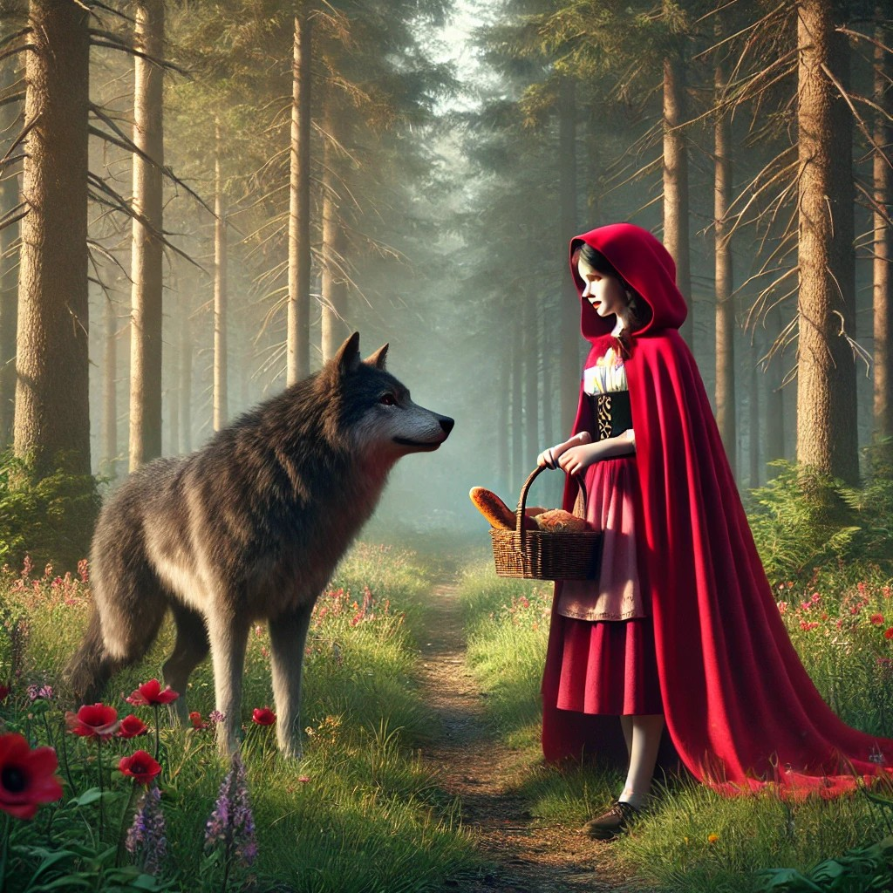
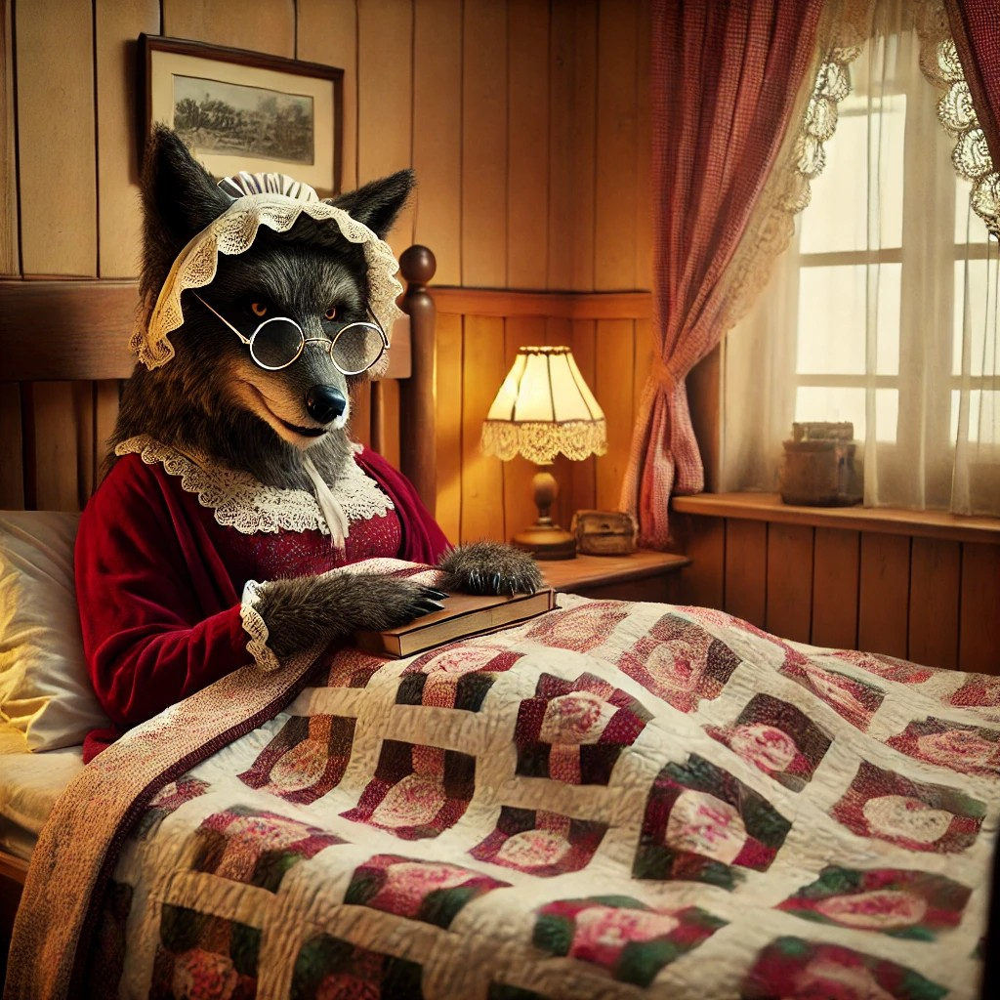

Había una vez...
Había una dulce niña llamada Caperucita Roja. Un día, su madre le pidió que llevara pan y mermelada a su abuela, que vivía al otro lado del bosque. Mientras caminaba por el bosque, se encontró con un lobo que parecía curioso y amigable.
El Truco del Lobo
El lobo engañó a Caperucita Roja para que recogiera flores, mientras él corría a la casa de su abuela. Disfrazado de abuela, el lobo esperaba en la cama para atrapar a Caperucita Roja.
